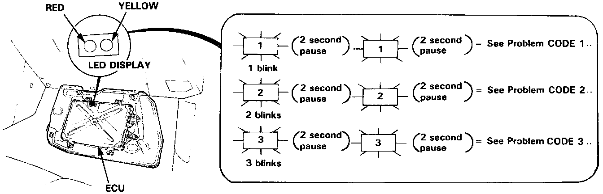

Reading Diagnostic Trouble Codes

Self-Diagnosis Indicator
When the PGM-FI warning light has been reported on, turn the ignition on, pull down the passenger's side carpet from under the dashboard and observe the LED on the top of the ECU. The Red LED indicates a system failure code by blinking frequency.
The Yellow LED is for idle speed adjustment and is not related to the following troubleshooting codes.
NOTE:
- If blinking Red LED indicates CODE 11, 16 or exceeds 18, count the number of blinks again, if the indicator is in fact blinking these codes, substitute a known-good ECU and recheck. If the indication goes away, replace the original ECU.
- The PGM-FI dash warning light and ECU Red LED may come on, indicating a system problem, when, in fact, there is a poor or intermittent electrical connection. First, check the electrical connections, clean or repair connections if necessary.